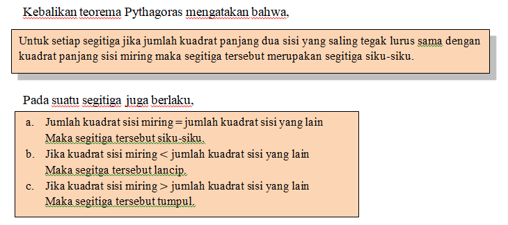

Kebalikan teorema Pythagoras mengatakan bahwa,

Tentukan jenis segitiga dengan panjang sisi-sisi sebagai berikut.
a. 3 cm, 5 cm, 4 cm
b.4 cm, 5 cm, 6 cm
c. 1 cm, 2 cm, 3 cm
Diagonal sisi adalah ruas garis yang menghubungkan dua titik sudut yang berhadapan pada suatu bidang datar. Diagonal sisi kubus tersebut antara lain Panjang AF, BD, CH, dan DE. Misalkan kita akan menentukan panjang diagonal sisi BD.
Perhatikan persegi ABCD. Panjang BD adalah salah satu diagonal sisi bidang ABCD. Sekarang, perhatikan ∆ABD. Karena ∆ABD siku-siku di A, maka dengan menggunakan teorema Pythagoras diperoleh
Diagonal ruang adalah ruas garis yang menghubungkan dua titik sudut yang berhadapan dalam suatu bangun ruang.
Diagonal ruang kubus ABCD.EFGH antara lain panjang HD dan panjang FD. Perhatikan ∆BDH siku-siku di titik D, maka untuk menentukan panjang diagonal ruang panjang HB dapat dicari dengan menggunakan teorema Pythagoras.